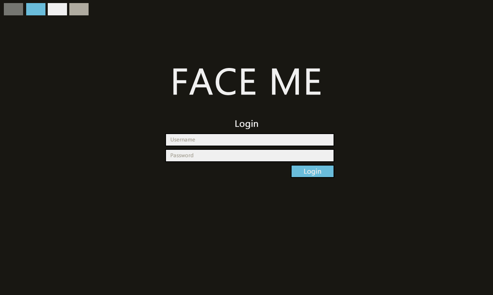
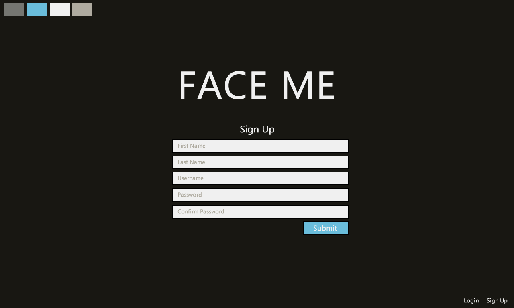
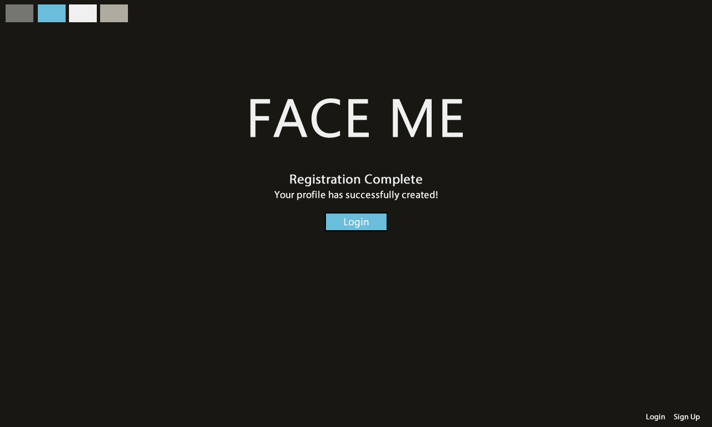
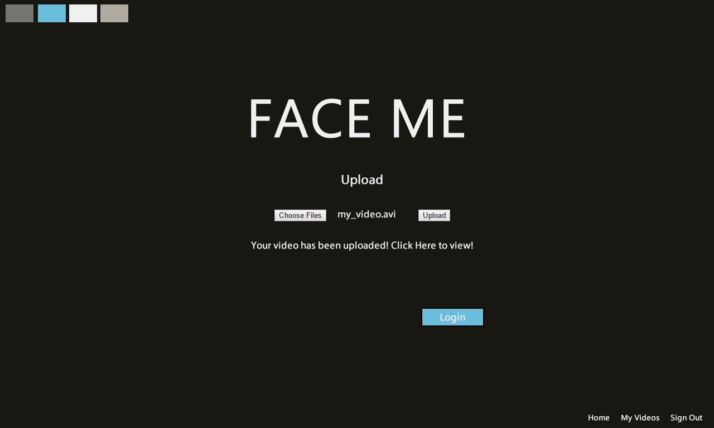
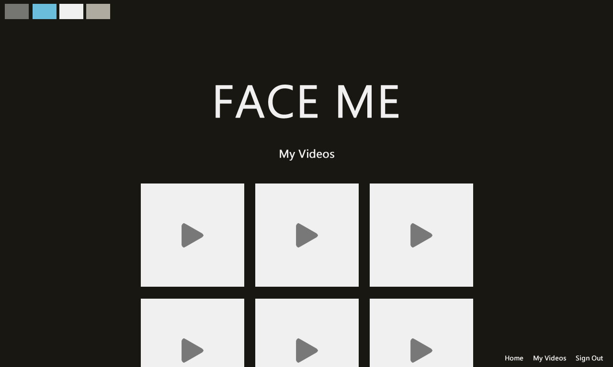

Extras
The concept mockups the site was drawn from, and two videos the finished pipeline made.
Concept mockups










Drawn in Fireworks in December 2016. The built pages kept the look: the four color boxes, the big FACE ME and the blue buttons. Click one for the full size.
Demo videos
The pipeline's own OUTPUT.webm files: OpenFace found 68 landmarks on each frame,
delaunay.cpp drew the mesh in blue and the points in red, and ffmpeg stitched the frames back together. See the landmark data re-plotted live.